Geometrical deformation
An embedded deformation graph applies the user's ARAP edit to Gaussian positions, rotations, and scales.
IEEE Transactions on Visualization and Computer Graphics · 2025
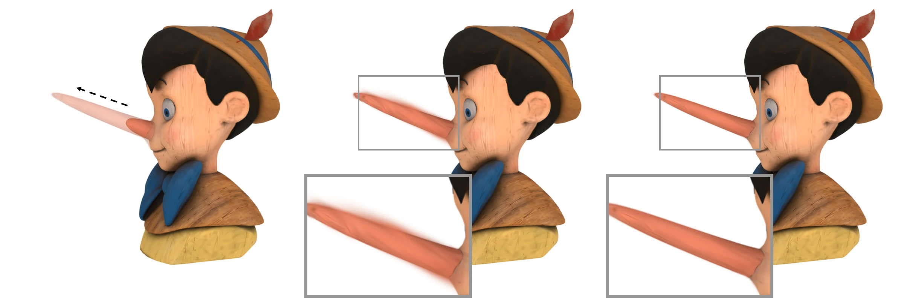
Overview
3D Gaussian Splatting (3DGS) models radiance fields as sparsely distributed 3D Gaussians, providing a compelling solution to novel view synthesis at high resolutions and real-time frame rates. However, deforming objects represented by 3D Gaussians remains a challenging task. Existing methods deform a 3DGS object by editing Gaussians geometrically. These approaches ignore the fact that it is the radiance field that rasterizes and renders the final image. The inconsistency between the deformed 3D Gaussians and the desired radiance field inevitably leads to artifacts in the final results. In this paper, we propose an interactive method for as-rigid-as-possible (ARAP) deformation of the Gaussian radiance fields. Specifically, after performing geometric edits on the Gaussians, we further optimize Gaussians to ensure its rasterization yields a similar result as the deformed radiance field. To facilitate this objective, we design radial features to mathematically describe the radial difference before and after the deformation, which are densely sampled across the radiance field. Additionally, we propose an adaptive anisotropic spatial low-pass filter to prevent aliasing issues during sampling and to preserve the field with the varying non-uniform sampling intervals. Users can interactively employ this tool to achieve large-scale ARAP deformations of the radiance field. Since our method maintains the consistency of the Gaussian radiance field before and after deformation, it avoids artifacts that are common in existing 3DGS deformation frameworks. Meanwhile, our method keeps the high quality and efficiency of 3DGS in rendering.
Interactive results
The full 5:30 video presents the two-stage method, interactive edits, novel-view results, comparisons, and ablations.
5 min 30 sec · H.264 MP4 · Read the supplementary material
Approach
A geometric edit provides the desired deformation; a second optimization stage restores consistency between the Gaussians and the deformed radiance field.
An embedded deformation graph applies the user's ARAP edit to Gaussian positions, rotations, and scales.
Sampled radial features guide Gaussian optimization, with adaptive filtering preserving high-frequency detail.
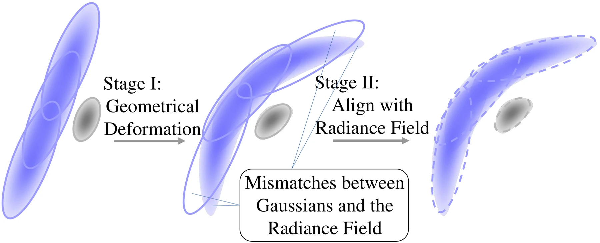
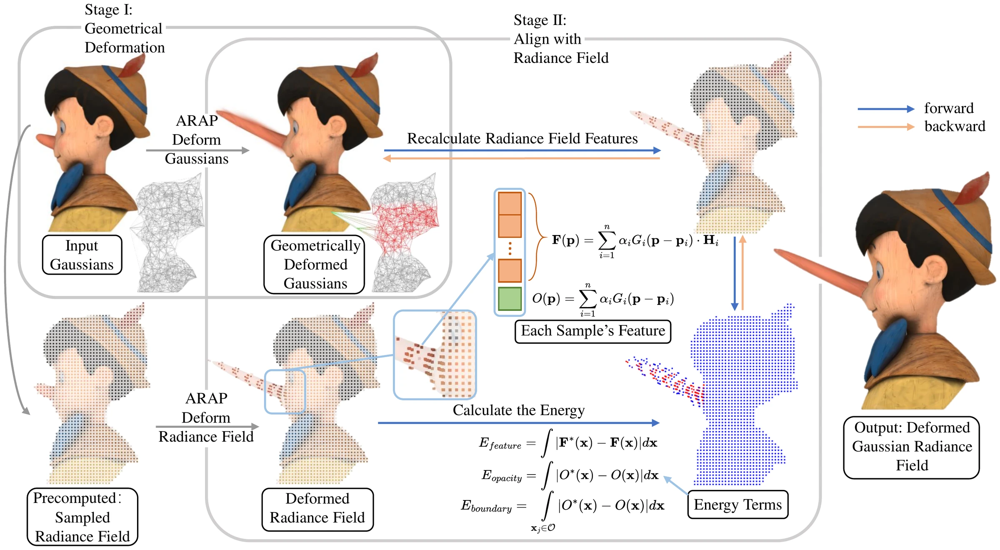
Evaluation
Across synthetic and real-world data, our method reduces spikes, blur, holes, and loss of detail caused by geometry-only deformation.
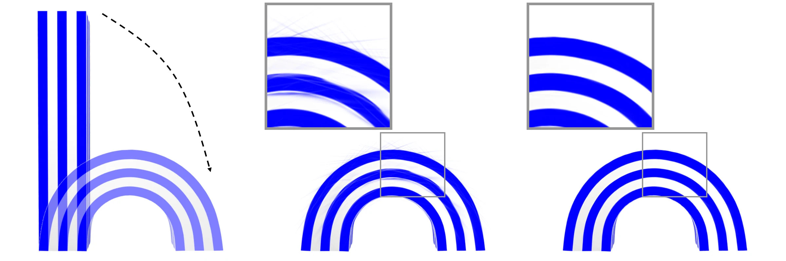
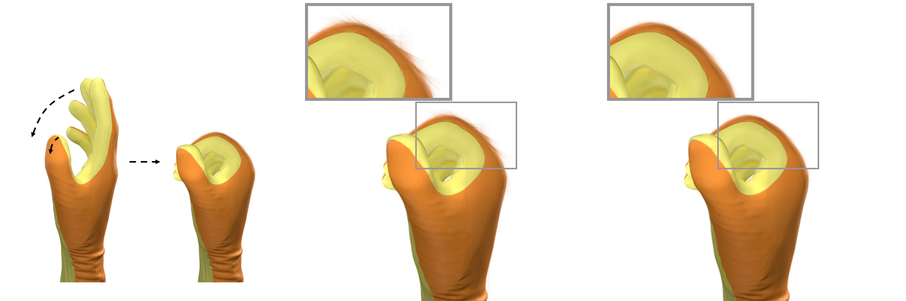
Hotdog
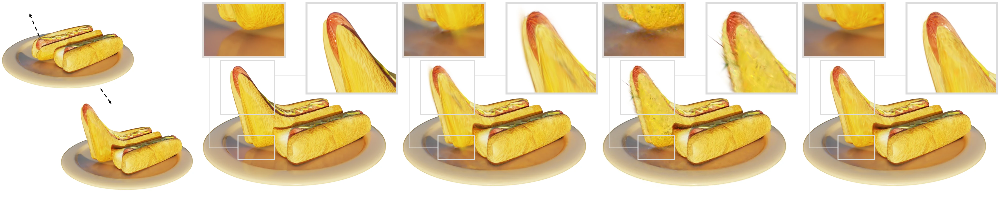
Ship
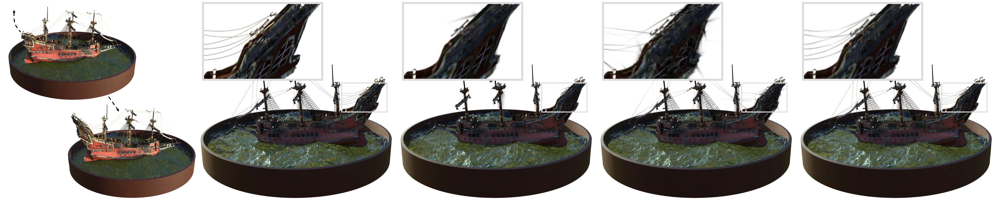
Novel-view synthesis
Additional twisting, scaling, and bending results shown from multiple viewpoints.
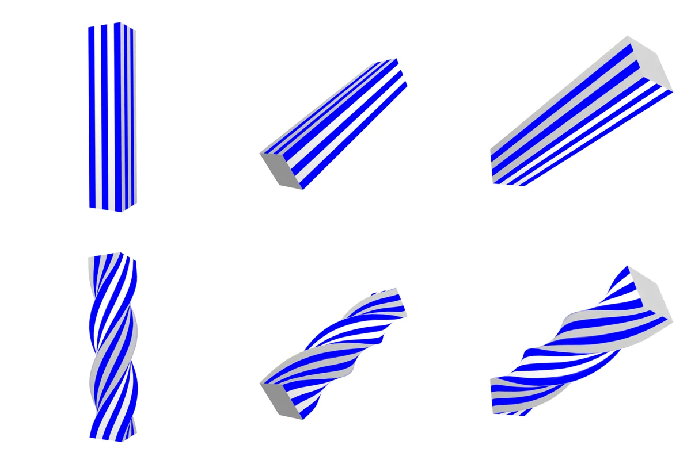
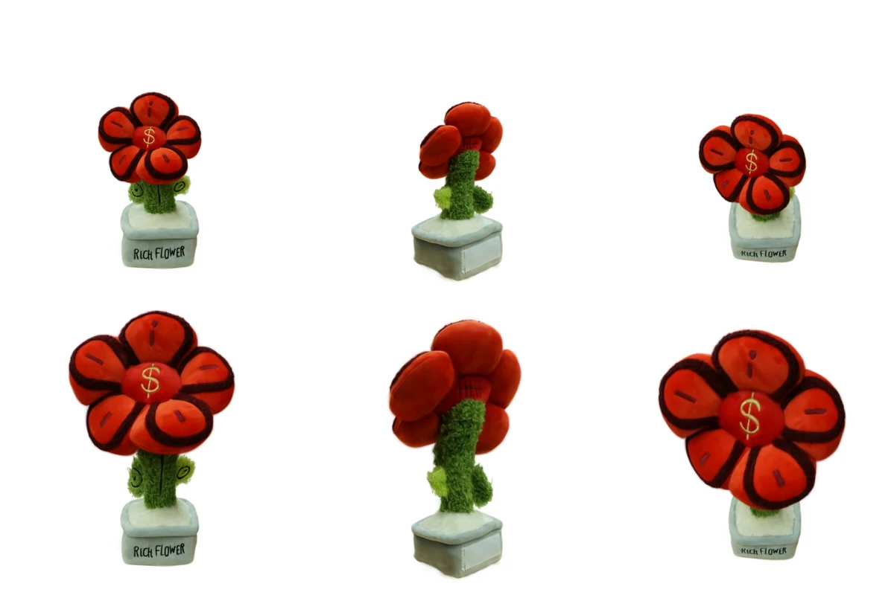
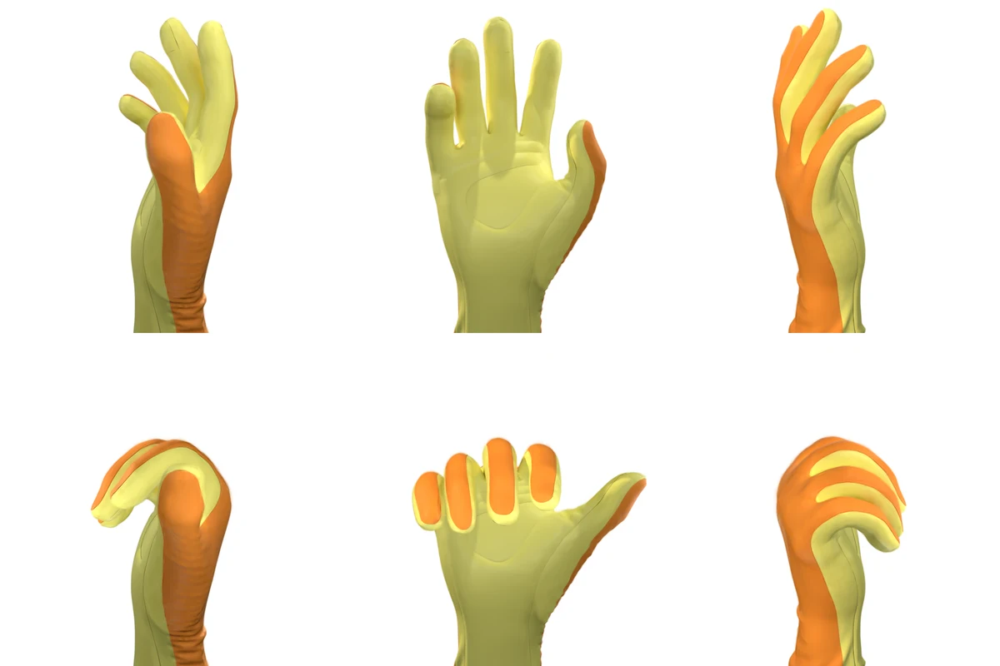
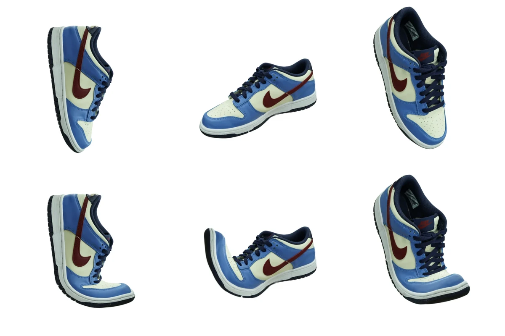
Reference
@ARTICLE{Tong2025arapGaussian,
author = {Tong, Xinhao and Shao, Tianjia and Weng, Yanlin and Yang, Yin and Zhou, Kun},
journal = {IEEE Transactions on Visualization and Computer Graphics},
title = {As-Rigid-As-Possible Deformation of Gaussian Radiance Fields},
year = {2025},
doi = {10.1109/TVCG.2025.3555404}
}